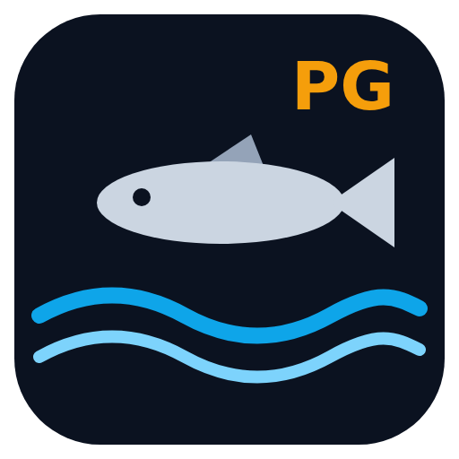
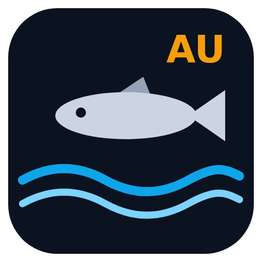
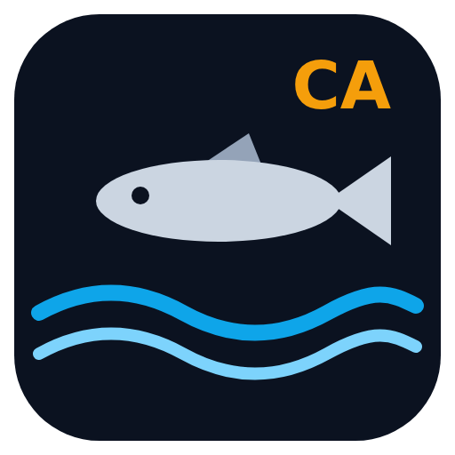

Guides de pêche du bar
Marée calculée sur l'appareil · météo AROME et houle par spot · carte · réglementation · journal de session · analyse de photos.





Installer sur le téléphone
Une seule application regroupe cet accueil et les cinq guides. Elle s'ouvre sur cette page ; sur Android, un appui long sur son icône ouvre directement un guide.
Android (Chrome) : la page doit être ouverte dans Chrome lui-même. Si elle s'affiche dans l'aperçu d'une autre application (lien ouvert depuis un message, GitHub…), passe d'abord par menu ⋮ → « Ouvrir dans Chrome ». Ensuite, menu ⋮ → « Installer l'application », ou « Ajouter à l'écran d'accueil » puis « Installer ». Téléphone en anglais : « Install app », ou « Add to Home screen » puis « Install ».
iPhone (Safari) : bouton Partager → « Sur l'écran d'accueil ».
Si tu avais déjà ajouté un guide seul à l'écran d'accueil, tu peux retirer cette ancienne icône.